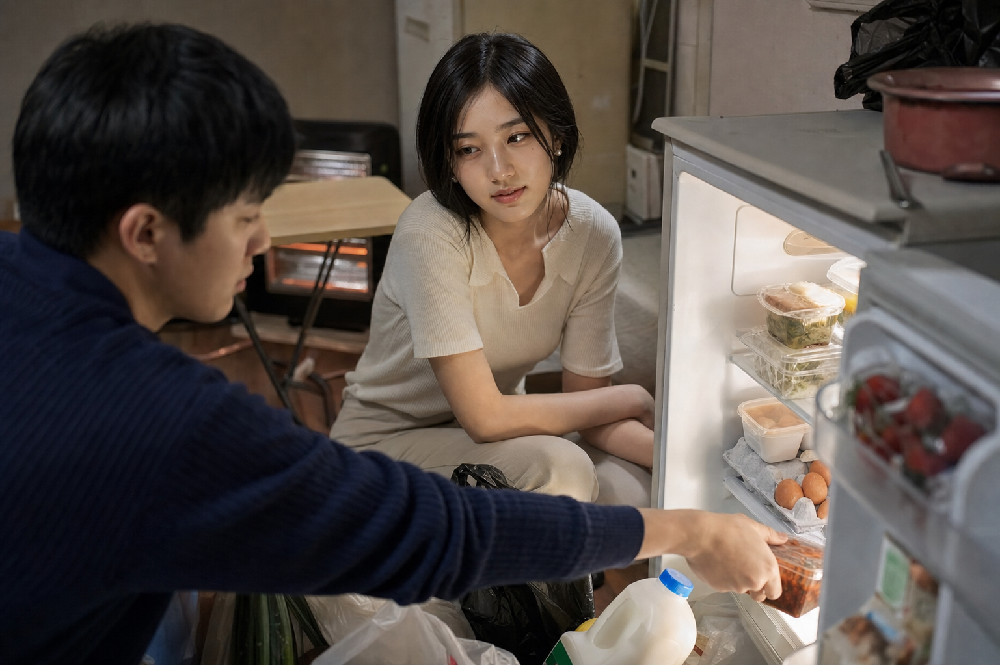

166. 채워지는 냉장고
서윤의 냉장고는 며칠 사이 다른 물건이 되었다.
3월 4일 저녁, 용식은 반찬가게에서 가져온 반찬통과 마트 봉투를 들고 자취방 문 앞에 섰다. 이번에는 형광등이 멀쩡했다. 문틈 아래로 노란빛이 새어 나왔다. 초인종을 누르자 안에서 빠른 발소리가 들렸다.
서윤이 문을 열었다.
[한서윤] "또 뭐 들고 왔어?"
[김용식] "별거 아니야."
[한서윤] "너 별거 아니라는 말 하면 보통 많던데."
용식이 봉투를 들어 보이자 서윤은 웃었다. 예전 같으면 먼저 괜찮다고 했을 것이다. 너무 많이 사 오지 말라고, 나 그렇게 못 사는 애처럼 보이냐고. 그런데 오늘 서윤은 봉투를 받았다. 자연스러웠다. 그 자연스러움이 며칠 사이 자라 있었다.
[한서윤] "냉장고 자리 없겠다."
[김용식] "그럼 큰 거 사 줄까?"
[한서윤] "야."
[김용식] "농담."
[한서윤] "농담 같은 얼굴 아니었어."
둘은 냉장고 앞에 나란히 쪼그려 앉았다. 멸치볶음, 김치, 장조림, 국거리, 우유, 달걀, 작은 과일 팩. 서윤은 하나씩 받아 넣으며 중얼거렸다.
[한서윤] "나 진짜 큰일 났다."
[김용식] "왜."
[한서윤] "이런 거 좋아지면 안 되는데 좋아."
[김용식] "좋아해."
[한서윤] "너는 너무 쉽게 말해."
[김용식] "쉽게 해 주고 싶어서."
서윤은 냉장고 문을 닫고 그 위에 등을 기대었다. 작은 방 안은 밝았다. 히터는 구석에서 작게 돌아갔고, 새 형광등은 깜빡이지 않았다. 용식은 그 풍경을 보며 이상한 만족감을 느꼈다. 자신이 이 방을 조금 바꿨다는 사실. 누군가의 생활을 채웠다는 감각.

그 감각은 달콤했다.
달콤해서, 죄책감이 잠깐 덮였다.
저녁은 김치찌개였다. 용식이 포장해 온 찌개를 냄비에 붓고, 서윤은 즉석밥을 전자레인지에 넣었다. 좁은 방에 찌개 냄새가 퍼졌다. 서윤은 밥상 앞에 앉아 숟가락을 들고 말했다.
[한서윤] "이거 너무 좋다."
[김용식] "뭐가."
[한서윤] "그냥. 집에 들어왔는데 먹을 게 있는 거."
용식은 숟가락을 멈췄다.
[한서윤] "예전엔 집에 들어오면 뭐 먹을지부터 걱정했거든. 편의점 갈까, 그냥 잘까, 라면 먹을까."
[김용식] "이제 걱정하지 마."
[한서윤] "그러면 나 진짜 기대."
[김용식] "기대라니까."
서윤은 고개를 숙이고 밥을 비볐다. 볼이 조금 붉었다. 질투나 감시 없이, 폰을 확인하지도 않고, 서윤은 지금 이 밥상 하나에 안도하고 있었다. 용식은 그게 편했다. 초연과 있을 때처럼 설명하지 않아도 됐다. 같은 각도의 사진도, 전화 시간도, 누구랑 있었냐는 질문도 없었다.
서윤은 믿고 싶어 했다.
용식은 그 믿음 위에 밥상을 차리고 있었다.
밥을 먹던 중 폴더폰이 울렸다. 단체방 알림이었다. 용식은 무심코 열었다.
사진이 붙어 있었다. 이번엔 지난번보다 선명했다. 카페 앞 작은 테이블, 종이컵, 웃는 얼굴들. 초연이 있었다. 민준도 있었다. 민준은 초연 옆에 앉아 있었고, 초연의 목도리 끝을 손으로 정리해 주는 듯한 순간이 찍혀 있었다. 손이 닿은 건지, 닿기 직전인지 알 수 없었다. 단체방 사람들은 아무렇지 않게 웃고 있었다.
용식은 화면을 오래 봤다.
너무 오래.
[한서윤] "무슨 일 있어?"
서윤의 목소리는 다정했다. 의심보다 걱정이 먼저였다. 용식은 화면을 닫았다.
[김용식] "아니. 학교 단체방."
[한서윤] "개강해서 정신없겠다."
[김용식] "응."
[한서윤] "애들이 뭐래?"
[김용식] "그냥 모임 사진."
서윤은 고개를 끄덕였다. 더 묻지 않았다. 그녀는 찌개 국물을 떠서 용식의 밥 위에 조금 얹어 주었다.
[한서윤] "식기 전에 먹어."
그 순간 용식은 더 불편해졌다. 서윤은 몰랐다. 사진 속 초연과 민준을 모른다. 아니, 민준이라는 이름 자체도 몰랐다. 그녀가 아는 건 용식이 학교 단체방을 봤다는 것뿐이었다. 그런데 그 모름이 용식에게는 안전처럼 느껴졌다.
[김용식] "응."
그는 숟가락을 들었다. 찌개 맛은 진했다. 집밥 같았다. 그런데 머릿속에는 초연의 목도리를 만지던 민준의 손이 남았다.
식사를 마치고, 서윤은 설거지를 했다. 용식은 이불 위에 앉아 폴더폰을 다시 열었다. 단체방 사진은 여전히 있었다. 그는 확대했다. 초연이 웃고 있었다. 지난번 카페에서 보였던 담담함과 달리, 조금 풀린 얼굴이었다. 민준은 과하게 들이대는 사람처럼 보이지 않았다. 그냥 옆에 있는 사람. 편하게 챙겨 주는 사람.
그게 더 싫었다.
[한서윤] "용식아."
서윤이 싱크대 앞에서 불렀다. 용식은 급히 폴더폰을 닫았다.
[김용식] "응?"
[한서윤] "내일 시간 돼?"
[김용식] "저녁?"
[한서윤] "응. 나 관리사무소 가야 하는데, 같이 가 줄래? 보일러 얘기 좀 해야 해서."
[김용식] "같이 가 줄게."
서윤은 환하게 웃지는 않았다. 하지만 안심한 듯 고개를 끄덕였다. 그 표정이 다시 용식을 붙잡았다. 서윤의 문제는 구체적이었다. 형광등, 히터, 관리비, 냉장고, 보일러. 돈과 시간으로 해결할 수 있는 것들. 초연의 문제는 끝난 뒤에도 감정으로 남았다. 민준의 손, 단체방 사진, 자존심.
밤이 깊어 서윤이 씻으러 들어간 사이, 용식의 폴더폰이 다시 울렸다.
정다은이었다.
문자는 너무 아무렇지 않았다. 마치 어제 조수석에 앉은 것이 자연스러웠던 것처럼. 용식은 문자를 보고 한참 손을 멈췄다.
서윤은 욕실 안에서 물소리를 내고 있었다. 작은 자취방에 그 소리가 가득 찼다. 용식은 같은 방 안에서 다른 여자에게 온 문자를 보고 있었다.
답장은 곧 왔다.
용식은 웃지도 못했다. 거절해야 했다. 서윤과 사귀고 있었다. 방금 서윤의 냉장고를 채웠고, 내일 관리사무소에 같이 가기로 했다. 그런데 거절 문장은 손끝에서 나오지 않았다.
전송.
욕실 문이 열렸다. 서윤이 수건으로 머리를 털며 나왔다.
[한서윤] "누구야?"
[김용식] "과 애."
[한서윤] "개강하니까 연락 많네."
[김용식] "그러게."
서윤은 아무 의심 없이 옆에 앉았다. 젖은 머리 냄새가 가까웠다. 그녀는 용식의 어깨에 기대었다.
[한서윤] "나 요즘 좀 좋다."
[김용식] "뭐가."
[한서윤] "그냥. 네가 집에 자주 오는 거."
용식은 대답 대신 서윤의 젖은 머리 끝을 손으로 정리했다.
서윤은 눈을 감았다.
그 작은 방은 따뜻했다.
그리고 따뜻해서, 용식이 밖에서 또 하나의 문을 열고 있다는 사실은 더 조용히 숨었다.